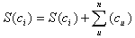
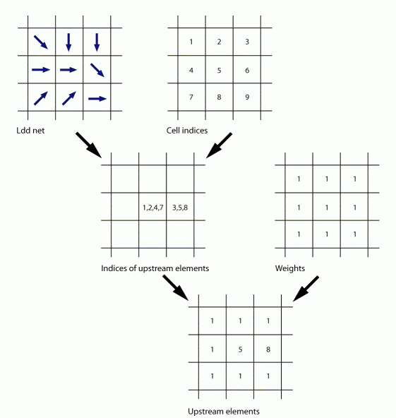
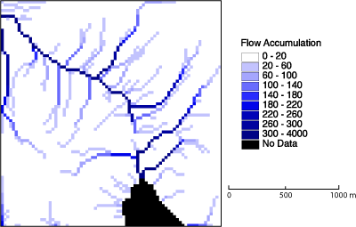
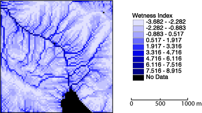
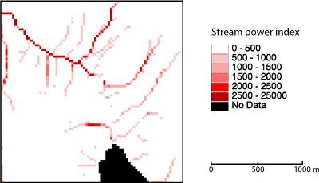
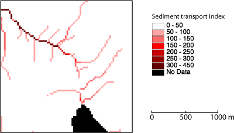
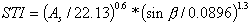
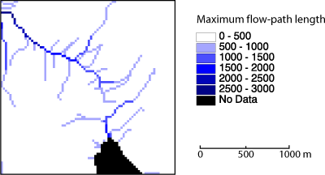

Abgeleitete Informationen aus Abflussnetzwerken
Lokale Abflussnetzwerke sind zunächst nur zur Bestimmung der direkten Ober- und Unterlieger sinnvoll. Wie jedoch bereits im Kapitel Abgeleitete Informationen skizziert wurde, können solche ersten Ableitungen für weitere Informationsgewinnung sehr hilfreich sein. Falls für jedes Pixel bekannt ist von wie sich gravitative Zu- und Abflüsse verhalten können zum Beispiel alle Elemente gezählt oder markiert werden, die von einem bestimmten Pixel aus flussauf(ab)wärts liegen. Gleichgültig ob die räumliche Verteilung von Niederschlag als gleichmäßig oder variabel angenommen wird, kann mit dieser Information berechnet werden, wie viel Wasser sich in jedem Pixel ansammelt. Ein LDD-Netz kann in einer Vielzahl von spezifischen hydrologischen Analysen eingesetzt werden. Eine naheliegende Anwendung ist die Berechnung von flussaufwärts liegenden Elementen zur Ableitung von Einzugsgebieten, Wasseransammlung, Kämmen oder Flussbetten. Es gibt darüberhinaus zahlreiche weitere hydrologische Indikatoren. Die wichtigsten sind:
- Feuchtigkeitsindex (Wetness Index, CTI)
- Flussintensitätsindex (Stream Power Index, SPI)
- Sedimenttransportindex (Sediment Transport Index, STI)
Elemente, die flussaufwärts liegen
Die Fläche, die flussaufwärts liegt, ist ein wichtiger Faktor in der Berechnung von Stofftransporten. Die Anzahl der Elemente, die von einem bestimmten Pixel flussaufwärts liegen, lässt sich leicht mit der folgenden Formel berechnen.

Wobei ci der i-te Rasterpixel mit dem Wert S(ci) und SUM(cu) die Summe aller Elemente beträgt, von denen Wasser in ci abfließt ci. Natürlich können die flussaufwärtsliegenden Elemente je nach Fragestellung gewichtet werden. Zur Berechnung von Wasseransammlung kann die Gewichtung z.B. ein Gleichgewicht darstellen zwischen lokaler Niederschlagsmenge und dem Wasser, das durch Evaporation, Infiltration und Interzeption der Oberfläche verlorengeht.
In der nächsten Abbildung sieht man oben links ein LDD-Netz. Zusätzlich wird ein Indexwert für jedes Pixel vergeben (Raster oben rechts). Auf dieser Grundlage werden die flussaufwärtsliegenden Elemente für jedes Pixel gefunden und mit der Liste der Indexwerte identifiziert (Mitte links). Falls zusätzlich eine Gewichtung verwendet wird (Mitte rechts), entsteht das Einzugsgebietraster, das für jedes Pixel die Anzahl der flussaufwärtsliegenden Elemente aufweist (unten).

Berechnung der Anzahl von flussaufwärtsliegenden Elementen für jedes Pixel.
Kanäle und Kämme
In der nebenstehenden Abbildung wurden die flussaufwärtsliegenden Elemente für ein DGM berechnet. Das sichergebende Muster, korrespondiert weitgehend mit dem Flussnetz auf der entsprechenden topographischen Karte, da ein wasserführendes Pixel erst dann "sichtbar" wird fall es eine genügend große Zahl von Oberliegern aufweist.
Die zuvor abgeleitete Rastermatrix der absoluten Wasseransammlungen kann
durch Verwendung eines Schwellenwerts zu einer Rastermatrix Karte der
Wasserläufe und Kämme reklassifiziert werden. Eine solche Matrix enthält nur
boolesche Werte, das heißt, ein Pixel gehört entweder zu einem Fließgewässer
bzw. Kamm oder weist keine Information auf. Die Wahl sinnvoller Schwellenwerte
ist abhängig von der Qualität des DGM und der räumlichen Auflösung. Solche
Analyseabfragen zur Bestimmung von Wasserläufen können in Pseudo-Abfragesprache
z.B. lauten:
if(upstreamelements >= 50) then streams=true; else streams=false;
Die Berechnung von Kämmen in einem Raster
kann als zweiseitiges Problem einer Wasserlaufberechnung betrachtet werden.
Kämme sind per Definition Pixel, die keine flussaufwärtsliegenden Elemente
besitzen (Brändli 1997). Die Abfrage in
Pseudo-Abfragesprache
if(upstreamelements = 0) then kaemme=true; else kaemme=false;

Feuchtigkeitsindex (Wetness Index)
Eine Karte der flussaufwärtsliegenden Elemente kann für weitere wichtige hydrologische Konzepte bzw. inhaltlich/thematische Fragestellungen herangezogen werden. Ein gutes Beispiel stellt der Feuchtigkeitsindex dar (siehe Beven and Kirkby zit. n. (Burrough et al. 1998)).
wobei As die flussaufwärtsliegende Fläche und ß die Neigung jedes Pixels wiedergeben (vgl. Abbildung). Deutlich erkennbar ist die aus der Empirie bekannte relative Trockenheit der Kämme und Feuchte der Akkumulationsgebiete zu erkennen

Flussintensitätsindex (Stream Power Index)
Der Flussintensitätsindex (Burrough et al. 1998), der durch die untenstehende Gleichung berechnet wird, ist ein Maß für das Erosionspotential des Oberflächenabfluss.
As stellt die flussaufwärtsliegende Fläche dar; ß steht für die Neigung jedes Pixels. In der folgenden Abbildung sehen Sie, dass die Flussintensitätsindexkarte der Karte der flussaufwärtsliegenden Elemente ähnelt.

Sedimenttransportindex (Sediment Transport Index)
Der Sedimenttransportindex beschreibt den Prozess der Erosion/Denudation und Ablagerung. Im Gegensatz zum Länge-Neigung-Faktor in der Universalbodenverlustgleichung (Universal Soil Loss Equation, USLE), kann man den Sedimenttransportindex auf dreidimensionale Flächen anwenden (Burrough et al. 1998).

Der Sedimenttransportindex wird mit folgender Gleichung errechnet. As ist die Fläche, die von jedem Pixel flussaufwärts liegt, und ß ist die Neigung des Pixels. Die nachstehende Abbildung zeigt ein Beispiel einer Sedimenttransportindexkarte. Die flussaufwärtsliegende Fläche wird stärker gewichtet als die Neigung. Dadurch wird das Ergebnis entsprechend modifiziert.

Maximale Fließweglänge (Maximum flow-path length)
Der maximale Fließweg ist die Länge des längsten Fließwegs von der Grenze des Einzugsgebietes zu einem beliebigen Punkt im DGM. Statt Fläche anzusammeln, wie es für flussaufwärtsliegende Flächen gemacht wurde, wird der Weg angesammelt, den Wasser hinter sich lässt, wenn es von Pixel zu Pixel fließt. Nur der längste Fließweg aller flussaufwärtsliegenden Pixel wird an das flussabwärtsliegende Pixel gegeben, nicht die Summe aller Fließwege (Wilson et al. 2000).
Die nebenstehende Abbildung zeigt ein Beispiel für den längsten Fließweg. Natürlich haben Hügel und Kämme niedrige Werte, wobei der Wert in einem Wasserlauf flussabwärts kontinuierlich zunimmt.
Bearbeiten Sie...
Die Indizien, die oben beschrieben wurden, beruhen auf der Anzahl der flussaufwärtsliegenden Elemente, die wir leicht berechnen können. Das Gegenteil (die Anzahl von Elementen, die flussabwärts von einem Element liegen) könnte aber auch interessant sein. Stellen Sie sich vor, Sie möchten die Entfernung zu einem Bach errechnen.
- Wie würden Sie vorgehen, ohne die schon bekannten Algorithmen anzupassen?
Klicken Sie hier für mehr Informationen